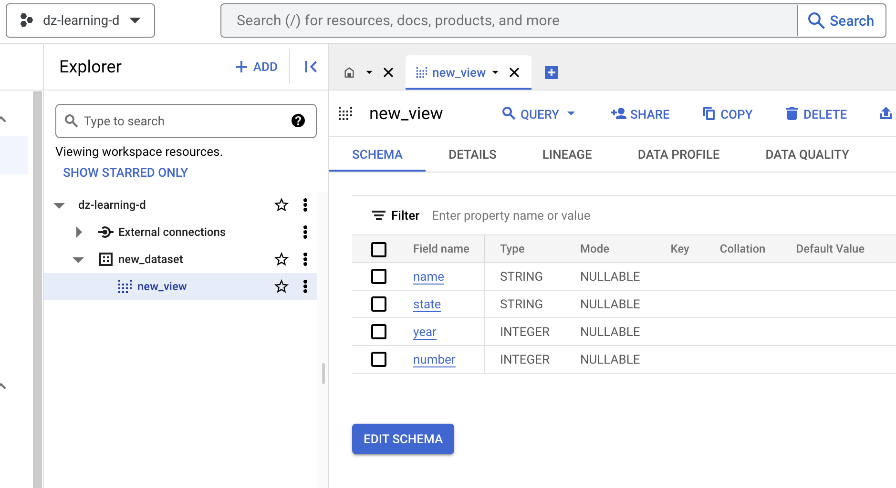

#!gcloud auth login --update-adcClients & Methods
Classes that instantiate GCP services’ Python API clients.
Authentication
Before you instantiate a class, remember authenticating using any of the following methods.
- Using the Google Cloud SDK(installation needed):
- Downloading a service account JSON keyfile and point to it using an environment variable:
#!export GOOGLE_APPLICATION_CREDENTIALS="/path/to/keyfile.json"BigQuery
BigQuery (project_id:str)
BigQuery client generation and additional methods
| Type | Details | |
|---|---|---|
| project_id | str | GCP project ID |
Example 1: using the BigQuery client to perform a query job.
# 1. Instantiate object:
PROJECT_ID = 'dz-learning-d'
bq_obj = BigQuery(PROJECT_ID)
# 2. Execute job:
DATASET = 'new_dataset'
TABLE = 'new_view'
QUERY = """
CREATE SCHEMA IF NOT EXISTS {dataset}
OPTIONS(
location="us",
default_table_expiration_days=3.75,
labels=[("purpose","learning"),("project","package")]
);
CREATE OR REPLACE VIEW `{project_id}.{dataset}.{table}`
OPTIONS(
expiration_timestamp=TIMESTAMP_ADD(
CURRENT_TIMESTAMP(), INTERVAL 48 HOUR),
friendly_name="new_view",
description="a view that expires in 2 days",
labels=[("purpose", "learning")]
)
AS SELECT name, state, year, number
FROM `bigquery-public-data.usa_names.usa_1910_current`
WHERE state LIKE 'W%'
""".format(project_id = PROJECT_ID, dataset = DATASET, table = TABLE)
job = bq_obj.client.query(QUERY) # API request.
job.result() # Waits for the query to finish.
print(job)QueryJob<project=dz-learning-d, location=US, id=9a4cd539-d063-429d-bff8-1a7b64a6620c>Which results in a brand new dataset and view on our project: 
Example 2: using the BigQuery client to perform a SQL query and save the results in a dataframe.
# 1. Instantiate object:
PROJECT_ID = 'dz-learning-d'
bq_obj = BigQuery(PROJECT_ID)
# 2. Execute SQL and save results in dataframe:
QUERY = """
SELECT name FROM `bigquery-public-data.usa_names.usa_1910_2013`
WHERE state = "TX"
LIMIT 100
"""
df = bq_obj.client.query(QUERY).to_dataframe()
df| name | |
|---|---|
| 0 | Mary |
| 1 | Roberta |
| 2 | Marguerite |
| 3 | Katie |
| 4 | Eunice |
| ... | ... |
| 95 | Rita |
| 96 | Elida |
| 97 | Billie |
| 98 | Ida |
| 99 | Elizabeth |
100 rows × 1 columns
# Test [extract_bucket_and_path]:
t_bucket = 'bucket_name'
t_path = 'folder_name_1/folder_name_2'
f_bucket, f_path = extract_bucket_and_path('gs://bucket_name/folder_name_1/folder_name_2')
test_eq(t_bucket, f_bucket)
test_eq(t_path, f_path)Storage
Storage (project_id:str)
Cloud Storage client generation and additional methods
| Type | Details | |
|---|---|---|
| project_id | str | GCP project ID |
Storage.download_files
Storage.download_files (gcs_uri:str, local_dir:str='', verbose:bool=True)
Download the files from a GCS location to a local directory
| Type | Default | Details | |
|---|---|---|---|
| gcs_uri | str | GCS URI. Ex: gs://bucket_name/[folder_name/] | |
| local_dir | str | Local directory to download the file | |
| verbose | bool | True | Boolean variable to print paths of files downloaded |
# 1. Instantiate object:
PROJECT_ID = 'dz-learning-d'
stg_obj = Storage(PROJECT_ID)
# 2. Download files from GCS location to local:
GCS_URI = 'gs://dz-d-stg-us-testartifacts/gcp-python-client-funtions/01_storage/01_download_files_folder/'
LOCAL_DIR = 'test_sandbox/01_storage'
res = stg_obj.download_files(GCS_URI, LOCAL_DIR, False)
print(res)
# Test [download_files]:
test_eq(res, 'No. files downloaded: 4')No. files downloaded: 4Portions of this page are modifications based on work created and shared by Google and used according to terms described in the Creative Commons 4.0 Attribution License.